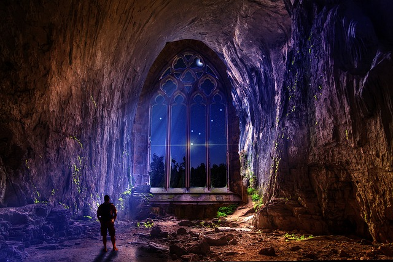

Jogging is a form of trotting or running at a slow or leisurely pace. The main intention is to increase physical fitness with less stress on the body than from faster running but more than walking, or to maintain a steady speed for longer periods of time. Performed over long distances, it is a form of aerobic endurance training.

Badminton is an Olympic sport with five competitive disciplines of men's and women's singles, men's and women's doubles, and mixed doubles, where each partner is a man and a woman. For a high level of play, this sport requires excellent health care. Players need aerobic stamina, agility, strength, speed, and accuracy. It is also a technical sport, which requires good body coordination, technical skills, and sophisticated racket skills.

Climbing is a type of rugged activity that requires the leader of this activity to walk, on top of nature's structure, or more precisely following the flow of the climbing trail. This activity is synonymous with hilly, mountainous, valleys or high cliffs that are rocky, sandy, or flat. Climbing activities are done externally, but some are also done internally, for example climbing in a large cave that is large, steep, rocky and highly structured. Climbing is quite popular in the world. The value of health benefits from climbing activities are various depending on the type of climbing carried out, there are climbers who can receive positive effects during and after doing climbing activities, but there are also negative effects.